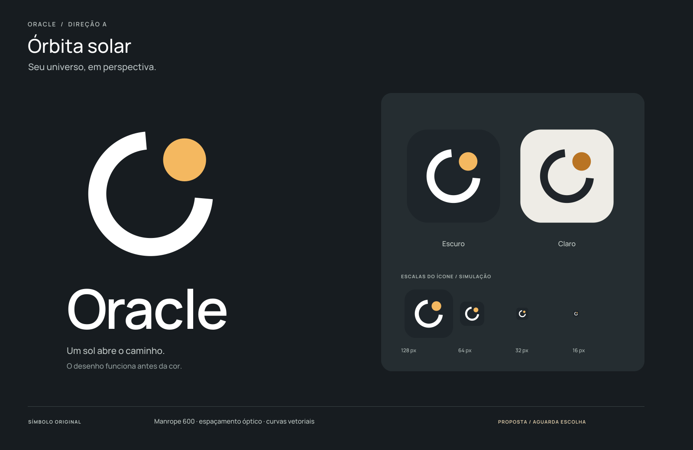
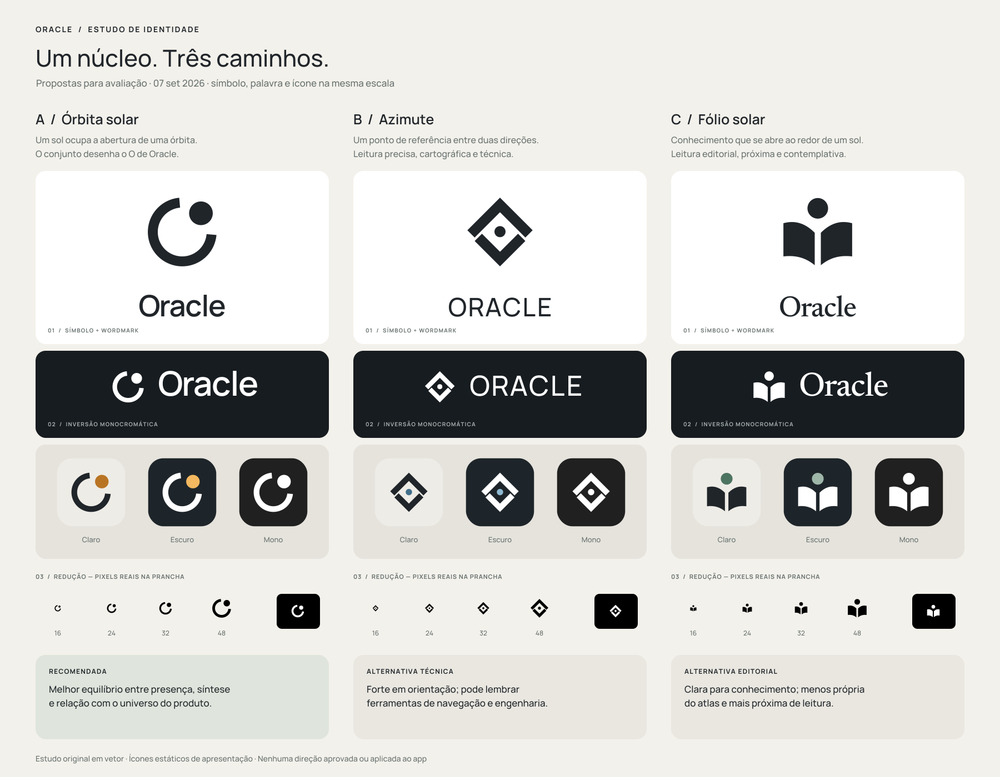
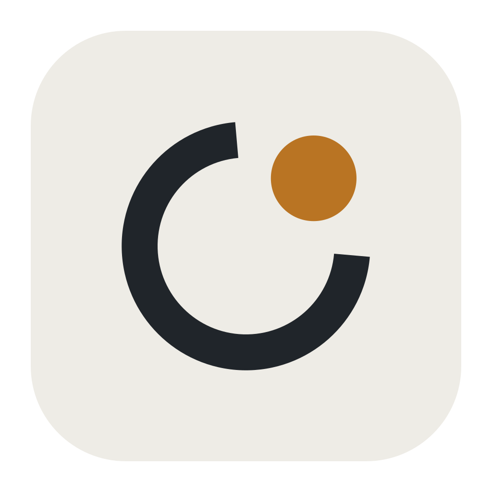
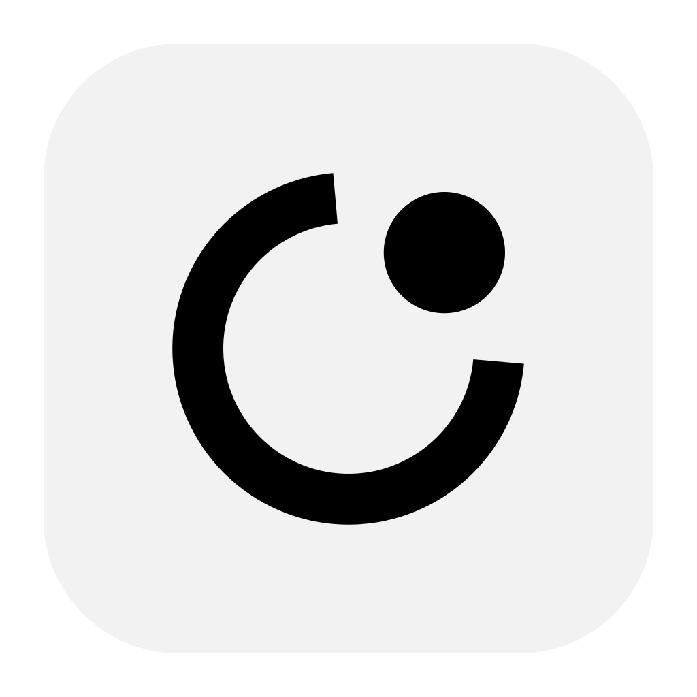
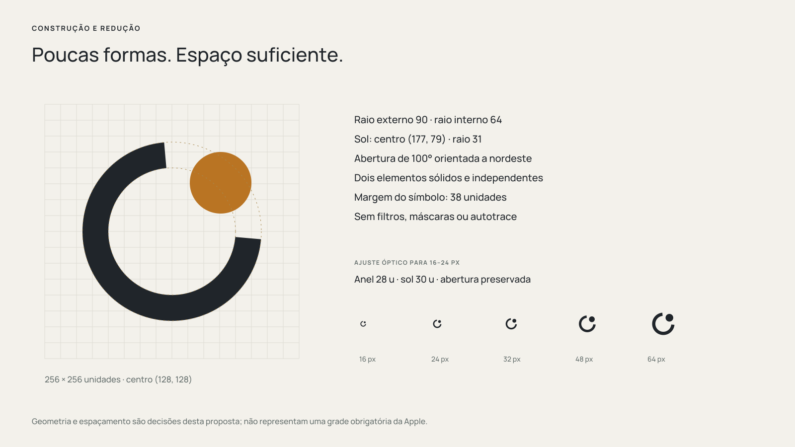
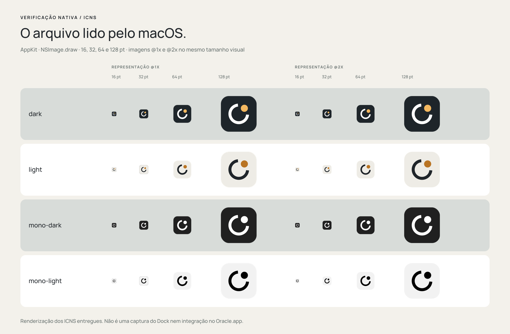

Marca
Direção A em vetor, preto e branco.
Símbolo SVGWordmark SVGAssinatura horizontal SVGAssinatura branca SVGSímbolo PDF
Três caminhos para representar o Oracle. Uma marca simples para um aplicativo que torna seu conhecimento, suas coleções e sua atividade compreensíveis.
Proposta · aguardando escolha de Mateus
A / Órbita solar. Aplicações conceituais; os tamanhos mostrados na imagem acompanham a escala da prancha.
Símbolo, palavra, inversão, ícone e redução seguem a mesma escala nominal. A é solar; B, cartográfica; C, editorial.

Troque a direção e o fundo. Os símbolos abaixo de 16–48 px estão em tamanho CSS real; o ícone do aplicativo aparece ao lado, em cor e mono.


A · Órbita solar · fundo claro. Esta prévia não registra aprovação.
Um arco e um disco desenham o O de Oracle. O sol ocupa a abertura da órbita e conserva sua presença quando toda a marca passa para uma cor.
Essa direção acompanha o universo do app com duas formas. A palavra em Manrope 600 mantém a leitura calma e direta; a cor solar relaciona o ícone ao núcleo luminoso do atlas.
A avaliação favoreceu simplicidade, leitura e relação com o produto. Reconhecimento e diferenciação ainda precisam de revisão humana e testes de uso.
A direção visual e sua cor não estão aprovadas. O nome Oracle já foi mantido por decisão do produto.
O nome coincide com marcas de software e IA existentes. A forma proposta se distancia dos exemplos examinados; isso não equivale a liberação jurídica.
Ler pesquisa e critérios ↗Setor anular e sol separados. Sem autotrace. Um master óptico preserva o respiro a 16–24 px.

Quatro pacotes, dez representações cada e 48 amostras rasterizadas pelo AppKit. A prancha mostra os arquivos lidos pelo macOS; o ícone não foi aplicado ao aplicativo.

Abrir recibo de verificação ↗SVG e PDF preservam as curvas. PNGs acompanham os masters. O pacote de produção técnica permanece marcado como proposta até a aprovação.
Direção A em vetor, preto e branco.
Símbolo SVGWordmark SVGAssinatura horizontal SVGAssinatura branca SVGSímbolo PDFExports clássicos; camadas modernas documentadas.
PNG 1024 · escuroPNG 1024 · claroICNS · escuroICNS · claroCamadas e integração futuraComparação, critérios e especificação.
Pacote completo · ZIPTrês direções · PDFRecomendação · PDFEspecificação do desenhoBrief e pesquisa com fontesÍndice completo dos arquivosSeis referências principais: Obsidian, Bear, Things, Raycast, Stellarium e QGIS. A pesquisa distingue princípios aproveitáveis das aparências a preservar como propriedade de outras marcas.
As orientações atuais da Apple apontam para camadas de 1024 × 1024, sem máscara embutida. Foram preparadas camadas SVG para Default, Dark e Mono; o projeto Icon Composer e as aparências clear/tinted ainda dependem de validação.
Manrope e Newsreader são distribuídas sob SIL Open Font License 1.1, com os arquivos originais e licenças no pacote. Nenhum serviço pago foi usado.
Abrir a pesquisa completa com fontes e limites ↗{kind=link}
{kind=link}
{kind=link}
{kind=link}
{kind=link}